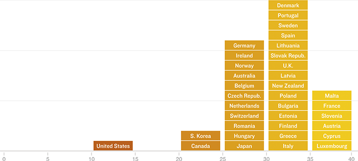

The U.S. Falls Behind In Vacation Days
Among advanced economies, the U.S. stands alone in not mandating vacation days for workers and only grants 10 federal holidays (which are not guaranteed days off for all workers). The chart below counts the minimum number of mandatory vacation and national holidays that countries grant workers, according to the OECD.
